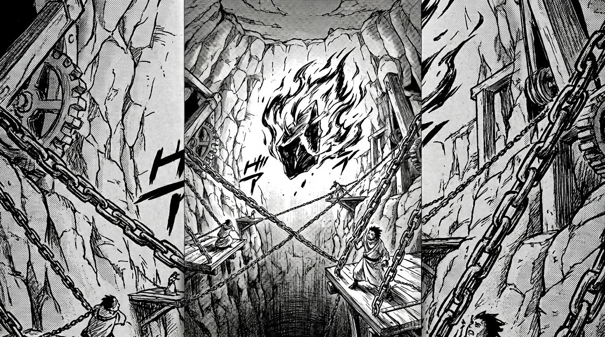

Народное предание Империи Игнис

В Империи Игнис детям рассказывают одну историю перед сном. Не сказку — предание. Голос матери или отца звучит глухо за респиратором, а за окном красным мерцает небо.
Говорят, в самом сердце Багрового Горна есть место, куда не пускают даже генералов без особого разрешения Владыки Пламени. Кратер, выжженный в скале тысячи лет назад ударом, который расколол мир. На дне того кратера — осколок. Чёрный, гладкий, неплавящийся. Ни один огонь — а Игнис пробовали все — не в состоянии нагреть его хотя бы на градус. Он всегда холодный.
Вокруг осколка построена Кузня. Платформы на цепях, подвешенные над бездной, где жар такой, что металл течёт, как вода. Генералы говорят, что там перековывается судьба мира. Что однажды осколок отдаст свой секрет, и тогда Империя получит оружие, перед которым склонятся все народы Ауракса.
Дети засыпают с мыслью о величии. Они не задаются вопросом, кто именно работает на тех платформах. Почему туда водят пленников, но никогда не выводят обратно. Почему иногда, тихими ночами, из-под земли доносится звук, похожий не на удары молота, а на крик.
Но это, конечно, просто ветер в трубах.